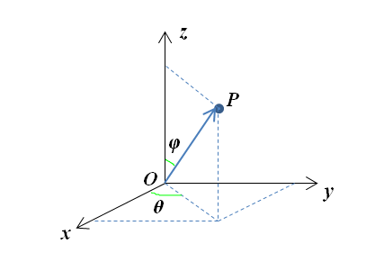

应力张量的认识之线性变换的证明¶
前面两部分分别介绍了应力张量的基础和对其本质的思考，最终得出了应力张量的本质是一个线性变换的结论。这一部分是对上述结论的验证计算和关于严谨性方面的补充证明。
为了加深对应力张量是线性变换的矩阵的理解，进行如下计算：从线性变换的角度求出变换矩阵（即应力张量），并验证其相似性。
为了计算方便又不失一般性，取如下图所示的计算条件：

S_1、S_2分别为全局绝对坐标系S下的两个局部坐标系（他们由截取P点的两两相互垂直的平面的法向决定），S_1和全局坐标系重合，S_2为全局坐标系绕z轴逆时针旋转90°得到。P点应力状态在S_1、S_2系下，分别用一个应力张量表示，并且是相似的。接下来就从线性变换角度进行计算说明。
局部坐标系的基及过渡矩阵¶
根据局部坐标轴在全局坐标系下的方向余弦容易得到他们的基分别为：
\[ \alpha = \left(\alpha_1,\,\alpha_2,\,\alpha_3\right) = \begin{pmatrix} 1 & 0 & 0 \\\ 0 & 1 & 0 \\\ 0 & 0 & 1 \end{pmatrix} \\\ \beta = \left(\beta_1,\,\beta_2,\,\beta_3\right) = \begin{pmatrix} 0 & -1 & 0 \\\ 1 & 0 & 0 \\\ 0 & 0 & 1 \end{pmatrix} \]
\alpha基到\beta基的过渡矩阵W满足
同理\beta基到\alpha基的过渡矩阵W^{-1}满足
解得：
\[ W = \alpha^{-1}\,\beta = \begin{pmatrix} 0 & -1 & 0 \\\ 1 & 0 & 0 \\\ 0 & 0 & 1 \end{pmatrix} \\\ W^{-1} = \beta^{-1}\,\alpha = \begin{pmatrix} 0 & 1 & 0 \\\ -1 & 0 & 0 \\\ 0 & 0 & 1 \end{pmatrix} \]
线性变换在基下的矩阵¶
设全局坐标系描述下，应力张量表示为
\[ \sigma = \begin{pmatrix} \sigma_{11} & \sigma_{12} & \sigma_{13} \\\ \sigma_{21} & \sigma_{22} & \sigma_{23} \\\ \sigma_{31} & \sigma_{32} & \sigma_{33} \end{pmatrix} \]
设T表示应力张量对应的线性变换，T(\alpha_1)表示\alpha_1截面上的应力，显然
T(\beta_1)表示S_2坐标系下\beta_1截面上的应力，对应的是全局坐标系下y截面的应力
类似处理其他截面的应力，进而得到
\[ T(\alpha) = T\left(\alpha_1,\,\alpha_2,\,\alpha_3\right) = \begin{pmatrix} \sigma_{11} & \sigma_{21} & \sigma_{31} \\\ \sigma_{12} & \sigma_{22} & \sigma_{32} \\\ \sigma_{13} & \sigma_{23} & \sigma_{33} \end{pmatrix} \\\ T(\beta) = T\left(\beta_1,\,\beta_2,\,\beta_3\right) = \begin{pmatrix} \sigma_{21} & -\sigma_{11} & \sigma_{31} \\\ \sigma_{22} & -\sigma_{12} & \sigma_{32} \\\ \sigma_{23} & -\sigma_{13} & \sigma_{33} \end{pmatrix} \]
根据T(\alpha) = \alpha\,A，T(\beta) = \beta\,B，得到线性变换在基\alpha,\,\beta下的矩阵分别为
\[ A = \alpha^{-1}\,T(\alpha) = \begin{pmatrix} \sigma_{11} & \sigma_{21} & \sigma_{31} \\\ \sigma_{12} & \sigma_{22} & \sigma_{32} \\\ \sigma_{13} & \sigma_{23} & \sigma_{33} \end{pmatrix} \\\ B = \beta^{-1}\,T(\beta) = \begin{pmatrix} \sigma_{22} & -\sigma_{12} & \sigma_{32} \\\ -\sigma_{21} & \sigma_{11} & -\sigma_{31} \\\ \sigma_{23} & -\sigma_{13} & \sigma_{33} \end{pmatrix} \]
也就是P点在S_1、S_2坐标系下的应力张量。由于表示上的缘故，这里为转置关系。
相似关系¶
验证可知W^{-1}\,A\,W=B，即A \sim B
\[ \begin{align*} W^{-1}\,A\,W &= \begin{pmatrix} 0 & 1 & 0 \\\ -1 & 0 & 0 \\\ 0 & 0 & 1 \end{pmatrix}\, \begin{pmatrix} \sigma_{11} & \sigma_{21} & \sigma_{31} \\\ \sigma_{12} & \sigma_{22} & \sigma_{32} \\\ \sigma_{13} & \sigma_{23} & \sigma_{33} \end{pmatrix}\, \begin{pmatrix} 0 & -1 & 0 \\\ 1 & 0 & 0 \\\ 0 & 0 & 1 \end{pmatrix}\\\ &=\begin{pmatrix} \sigma_{22} & -\sigma_{12} & \sigma_{32} \\\ -\sigma_{21} & \sigma_{11} & -\sigma_{31} \\\ \sigma_{23} & -\sigma_{13} & \sigma_{33} \end{pmatrix}\\\ &= B \end{align*} \]
至此，可以清晰看出不同坐标系下应力张量与不同基下线性变换矩阵的等价关系。
线性空间的证明¶
上述关于线性变换的理解都是基于\sigma_{ij}\,n_j=p_i的形式而推出的，显得还不够严谨。比如，没有证明截面位置、截面应力可以做成一个线性空间，也没有证明从截面位置到截面应力的变换是线性变换。
本着彻底打通这条思路的心思，下面开始这两个问题的分析。
线性空间的定义¶
设V是一个非空集合，R为实数域。如果对于V中任意两个元素\alpha,\,\beta，V中总有唯一的一个元素\gamma与之对应，称为\alpha与\beta的和，记作\gamma = \alpha+\beta；又对于R中任一数\lambda与V中任一元素\alpha，V中总有唯一的一个元素\delta与之对应，称为\lambda与\alpha的积，记作\delta = \lambda\,\alpha。
并且这两种运算满足以下八条运算规律（其中\alpha,\,\beta,\,\gamma \in V，\lambda,\,\mu \in R）：
- \alpha+\beta=\beta+\alpha
- (\alpha+\beta)+\gamma = \alpha + (\beta+\gamma)
- 在V中存在零元素0，对任何\alpha都满足\alpha+0=\alpha
- 对任何\alpha，都有\alpha的负元素\beta满足\alpha+\beta=0
- 1\cdot\alpha=\alpha
- \lambda\,(\mu\,\alpha) = (\lambda\,\mu)\,\alpha
- (\lambda+\mu)\,\alpha = \lambda\,\alpha+\mu\,\alpha
- \lambda\,(\alpha+\beta) = \lambda\,\alpha + \lambda\,\beta
那么，V就称为实数域R上的线性空间（或向量空间）。
线性空间的证明¶
截面应力空间显然是一个线性空间，因为它是一个一般的三维向量空间。对于截面位置空间，需要证明其对于某种定义的加法和乘法运算封闭，且满足上述运算律。
截面位置空间是由方向余弦描述的，
\[ \begin{align*} \alpha &= \left(n_1,\,n_2,\,n_3\right) = \left(\cos\langle{\vec{n},\,x}\rangle,\,\cos\langle{\vec{n},\,y}\rangle,\,\cos\langle{\vec{n},\,z}\rangle\right) \\\ \beta &= \left(m_1,\,m_2,\,m_3\right) = \left(\cos\langle{\vec{m},\,x}\rangle,\,\cos\langle{\vec{m},\,y}\rangle,\,\cos\langle{\vec{m},\,z}\rangle\right) \end{align*} \]
其中，\langle{\vec{n},\,x}\rangle表示截面法线与x轴的夹角，其余以此类推。
n_1,\,n_2,\,n_3取值范围为[-1,\,1]，且满足n_1^2+n_2^2+n_3^2=1。显然常规的加法和数乘运算不满足封闭条件。
考虑到截面空间的描述特征，采用 球坐标系下角度的代数加法和数乘运算 来定义。

球坐标系下，
\[ \begin{align*} \alpha &= \left(n_1,\,n_2,\,n_3\right) = \left(\sin\varphi_1\,\cos\theta_1,\,\sin\varphi_1\,\sin\theta_1,\,\cos\varphi_1\right) \\\ \beta &= \left(m_1,\,m_2,\,m_3\right) = \left(\sin\varphi_2\,\cos\theta_2,\,\sin\varphi_2\,\sin\theta_2,\,\cos\varphi_2\right) \end{align*} \]
定义加法和数乘运算
\[ \begin{align*} \alpha + \beta &\triangleq \Biggl(\sin(\varphi_1+\varphi_2)\,\cos(\theta_1+\theta_2),\,\sin(\varphi_1+\varphi_2)\,\sin(\theta_1+\theta_2),\,\cos(\varphi_1-\varphi_2)\Biggr) \\\ \lambda\,\alpha &\triangleq \Biggl(\sin(\lambda\,\varphi_1)\,\cos(\lambda\,\theta_1),\,\sin(\lambda\,\varphi_1)\,\sin(\lambda\,\theta_1),\,\cos(\lambda\,\varphi_1)\Biggr) \end{align*} \]
在这种加法和数乘运算的定义下，显然对元素是封闭的，并且简单验证就可知同时满足加法的两个运算律、数乘的三个运算律。
-
零元素：取\varphi=\theta=0可得零元素(0,\,0,\,1)
-
负元素：取\beta=\left(-\sin\varphi_1\,\cos\theta_1,\,-\sin\varphi_1\,\sin\theta_1,\,\cos\varphi_1\right)，可得\alpha+\beta=(0,\,0,\,1)为零元素
-
单位1：显然1即为单位元素
综上可知，截面位置对于如上定义的运算可以作为一个线性空间。
线性变换的证明¶
线性变换的证明只需证明变换满足线性运算，对于此变换T(n)=\sigma\,n满足
\[ \begin{align*} T(\alpha + \beta) &= \sigma\,(\alpha+\beta) = \sigma\,\alpha+\sigma\,\beta = T(\alpha)+T(\beta) \\\ T(\lambda\,\alpha) &= \sigma(\lambda\,\alpha) = \lambda\,(\sigma\,\alpha) = \lambda\,T(\alpha) \end{align*} \]
总结¶
本文是对关于应力张量与线性变换之间等价关系的验证和证明，主要是线性空间与线性变换的内容，由此也可体会相关知识的贯通性。主要知识点：
-
线性变换对应矩阵的求法。
-
线性空间的证明方法：对定义的加法和数乘运算封闭且满足八条运算规则。